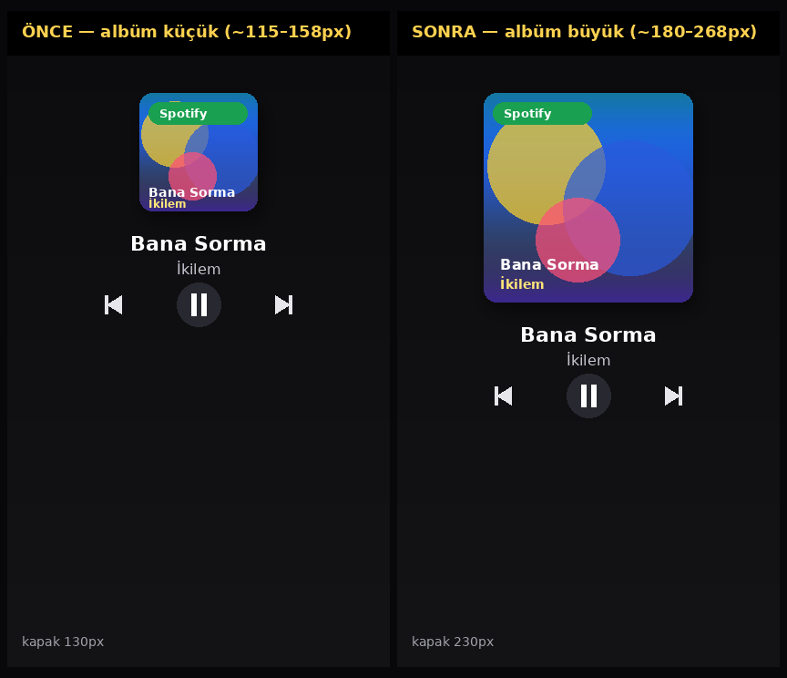
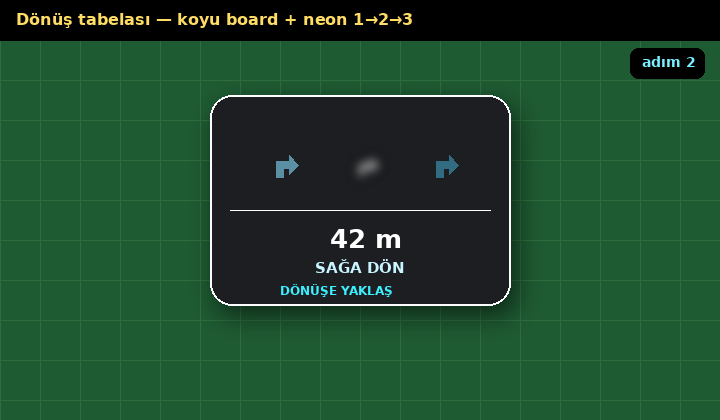
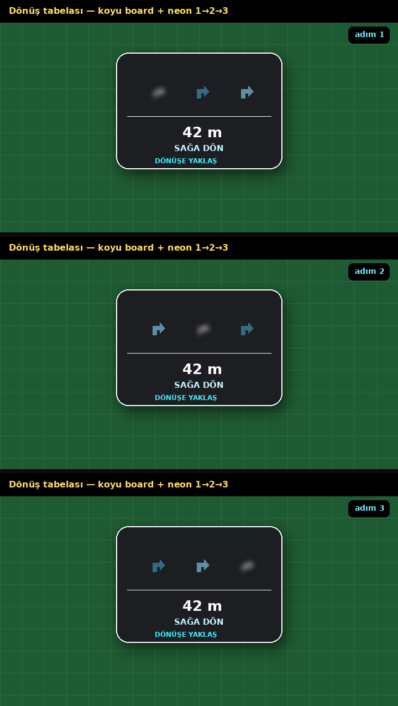
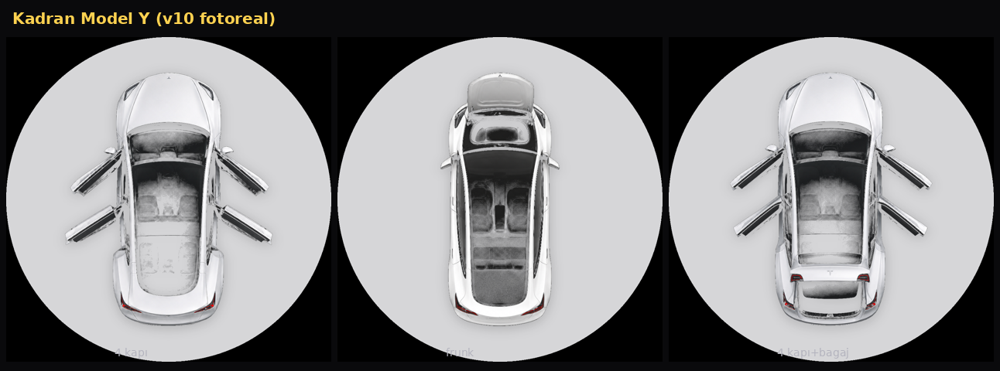

Albüm boyutu, dönüş tabelası ve kadran Model Y. Telefonda sarı kapsül xcode-ble-89 olmalı.

Sol: eski ~130px · Sağ: yeni ~230px (wing’de 180–268px)


Koyu yarı saydam board; oklar 1→2→3 yanıp sönüyor.

Tam v10 galeri